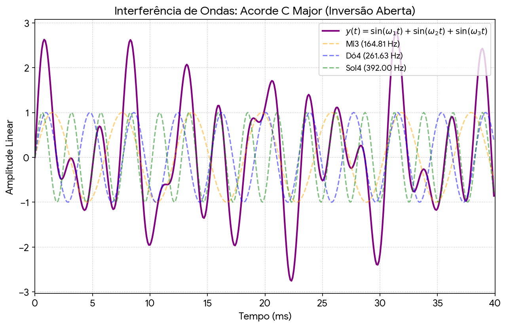
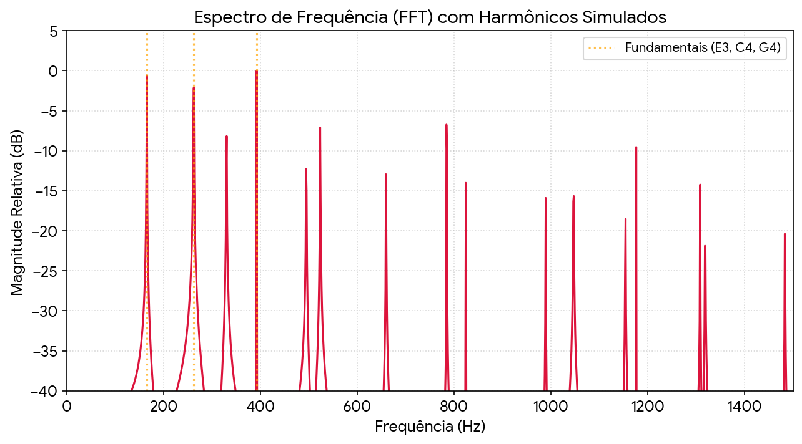
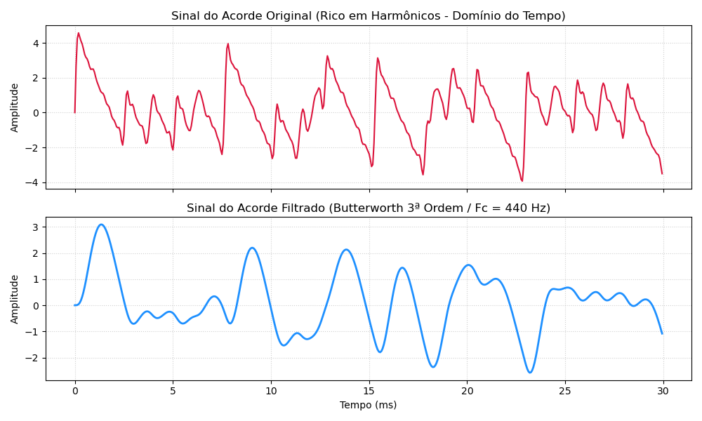

Proposta de TrabalhoO problema propostoOutros CódigosEfeito de Batimento1. O Batimento nas Notas Fundamentais (Senoides Puras)2. Por que os Harmônicos tornam o som mais "Rico"?Introdução de Filtro Passa Baixa1. O Comportamento do Filtro Butterworth de 3ª Ordem2. O que acontece com os Harmônicos (Onde o som muda)O Resultado Prático no SomSimulaçõesImpacto no Filtro na Distorção de Fase1. Impacto no Formato do Sinal (Domínio do Tempo)Análise Gráfica Sugerida:2. Impacto na Percepção Sonora Humana (Psicoacústica)Em resumo...Referências em PsicoacústicaSugestão de Enunciado para o TrabalhoProblemaA Função de Transferência do FiltroComo essa equação prova a sua tese sobre a Fase:Resumo para a Conclusão do TrabalhoLimiares Psicoacústicos: Tempo e Separação de Frequência1. Resolução Temporal e Atraso de Grupo (Group Delay)2. Separação de Frequências (Bandas Críticas)Como Simular e Ressaltar esse Efeito (Provocando a Percepção)Opção A: O Filtro Passa-Tudo de Alta Ordem (All-Pass Filter Network)Opção B: Filtro Reverso no Tempo (Time Reversal)ReferênciasFiltros Passa-TudoA Função de Transferência Analógica do Filtro Passa-TudoO Segredo de Engenharia do Passa-TudoComo ele altera a Fase e gera o AtrasoO Impacto Prático no Acorde
Filtrar um acorde musical, tentando separar a nota "central", o Dó ocorrendo na 4a-oitava.
O acorde é do tipo aberto, maior, formado pela combinação das notas: Dó (oitava superior) + Mi (oitava inferior) + Sol (oitava superior).
As frequências de cada nota seriam:
Mi = 164,81 Hz (E3 <-- E2); --> ou: E3 = 329.627533 Hz;
Dó = 261,63 Hz (C4 <-- C3); --> ou: C4 = 523.251099 Hz;
Sol= 392,00 Hz (G4 <-- C3). --> ou: G4 = 783.990845 Hz.
Obs.: Depos de consultar a Tabela de Frequências, Períodos e Comprimentos de Onda, percebemos que estamos gerando um acorde algo grave.
A composição temporal destas notas gera uma forma de onda como:

Obs.: foram assumidas amppitudes unitárias e fases iniciais zeradas.
import numpy as np
# Configurações do sinalfs = 8000 # Frequência de amostragem (Hz)duration = 0.05 # Duração curta para ver as oscilações claramente (50 ms)t = np.linspace(0, duration, int(fs * duration), endpoint=False)
# Frequências das notas (Hz)f_E3 = 164.81f_C4 = 261.63f_G4 = 392.00
# Ondas senoidais (amplitude 1 para cada)y_E3 = np.sin(2 * np.pi * f_E3 * t)y_C4 = np.sin(2 * np.pi * f_C4 * t)y_G4 = np.sin(2 * np.pi * f_G4 * t)
# Soma dos sinais (acorde)y_chord = y_E3 + y_C4 + y_G4
# Vamos imprimir alguns pontos ou metadados para estruturar a resposta do usuárioprint("Sinal gerado com sucesso.")print(f"Número de pontos: {len(t)}")print(f"Valor máximo da onda somada: {np.max(y_chord):.2f}")print(f"Valor mínimo da onda somada: {np.min(y_chord):.2f}")
FFT deste sinal:

Note:
Picos Principais (Fundamentais): Os três primeiros picos proeminentes à esquerda (alinhados com as linhas pontilhadas) representam a energia das notas puras escolhidas: 164,81 Hz, 261,63 Hz e 392,00 Hz.
Interseção de Harmônicos (Consonância): Notar como alguns picos surgem "adiantados" no espectro. Por exemplo, o 3º harmônico de Dó4 (
Ruído de Batimento Oculto: Se for realizado um zoom milimétrico nos picos coincidentes, será percebido que eles não são uma linha única perfeita. A sutil diferença de décimos de Hertz (causada pelo temperamento igual de
Se o sinal contivesse apenas as três senoides puras (as frequências fundamentais), a FFT mostraria rigorosamente apenas três linhas verticais (deltas de Dirac) em 164,81 Hz, 261,63 Hz e 392,00 Hz, com absolutamente nada acima disso. No gráfico anterior da FFT foram acrescentados múltiplos componentes acima de 400 Hz, implicando numa introdução proposital de harmônicos no laço for do código usado para gerar a FFT para emular o timbre complexo de um instrumento musical (como as cordas de um violão).
Código Python referente à "FFT":
import matplotlib.pyplot as pltimport numpy as np
# 1. Configurações para FFT precisafs = 8000 # Taxa de amostragem (Hz)duration = 1.0 # 1 segundo de duração garante resolução de frequência de 1 Hz (df = 1/T)t = np.linspace(0, duration, int(fs * duration), endpoint=False)N = len(t)
# 2. Frequências fundamentais do acorde (Mi3, Dó4, Sol4)fundamentals = [164.81, 261.63, 392.00]y_total = np.zeros_like(t)
# 3. Modelagem do sinal com decaimento harmônico (Causa dos picos acima de 400 Hz)for f_fund in fundamentals: # n=1 é a fundamental; n>1 são os harmônicos superiores for n in range(1, 10): f_harmonic = f_fund * n if f_harmonic < fs / 2: # Respeitando o limite de Nyquist amplitude = 1.0 / n # Decaimento linear de amplitude (1/n) para simular o timbre y_total += amplitude * np.sin(2 * np.pi * f_harmonic * t)
# 4. Cálculo da FFT (Usando rfft pois o sinal de entrada é puramente real)fft_vals = np.fft.rfft(y_total)fft_freqs = np.fft.rfftfreq(N, 1/fs)
# 5. Conversão para escala logarítmica de decibéis (dBFS)magnitude = np.abs(fft_vals)# Normaliza o maior pico para 0 dBmagnitude_db = 20 * np.log10(magnitude / np.max(magnitude) + 1e-6)
# 6. Plotagem do Espectroplt.figure(figsize=(10, 5))plt.plot(fft_freqs, magnitude_db, color='crimson', linewidth=1.5)
# Linhas guias para as frequências fundamentais informadasfor f in fundamentals: plt.axvline(x=f, color='orange', linestyle=':', alpha=0.7)
plt.title('Espectro de Frequência (FFT) com Harmônicos Simulados')plt.xlabel('Frequência (Hz)')plt.ylabel('Magnitude Relativa (dB)')plt.xlim(0, 1500) # Limitando o eixo X para visualização do intervalo de interesseplt.ylim(-40, 5)plt.grid(True, which='both', linestyle=':', alpha=0.5)plt.show()
Obs: Se for removido do loop interno for n in range(1, 10): e mantido apenas n = 1 (a frequência fundamental pura), o espectro acima de 400 Hz ficará completamente limpo e zerado.
Outras opções: Síntese #1 (SEM harmônicas) | Síntese #2 (COM harmônicas).
Acorde SEM harmônicas:
Acorde COM harmônicas:
O efeito de batimento (*beating*) é um fenômeno físico de modulação de amplitude que ocorre quando duas ondas senoidais de frequências muito próximas interferem entre si. Matematicamente, a superposição de duas frequências
No caso das suas 3 notas fundamentais puras (164,81 Hz, 261,63 Hz e 392,00 Hz), as distâncias entre elas são muito grandes (quase 100 Hz e 130 Hz). O ouvido humano não processa essas diferenças macroscópicas como um "batimento" (que é uma pulsação lenta de volume), mas sim como intervalos musicais distintos e consonantes.
O batimento real e a "riqueza" desse acorde acontecem justamente por causa dos harmônicos extras acima de 400 Hz, e a engenharia explica o porquê:
Se usarmos apenas os 3 componentes puros, o som será extremamente limpo, estéril e sem batimentos perceptíveis.
A única exceção matemática ocorre por causa do Temperamento Igual (
Uma quinta perfeita teórica exigiria uma razão exata de
Como o Sol real do instrumento é 392,00 Hz, existe uma diferença microscópica de 0,445 Hz. Isso gera um batimento subsônico quase imperceptível (uma oscilação de volume que leva mais de 2 segundos para completar um ciclo:
Quando adicionamos os harmônicos acima de 400 Hz, o fenômeno do batimento se multiplica e se torna audível, trazendo o som para o "mundo real". Veja o que acontece nas frequências mais altas do espectro:
Interferência de Alta Frequência: O 3º harmônico do Dó4 é
O Batimento Audível: No gráfico da FFT, esses dois harmônicos pareciam colados, mas eles têm uma diferença de
O Efeito Prático: Essa diferença de quase 1 Hz gera uma pulsação acústica real na região dos 784 Hz. O som não fica estático; ele ganha um "frescor" ou "vibração" (o que músicos chamam de calor ou chorus natural do instrumento).
Quanto mais subimos nos harmônicos, maiores se tornam essas pequenas diferenças absolutas de frequência, gerando múltiplos batimentos entrelaçados em velocidades diferentes. É por isso que sintetizadores baseados em ondas senoidais puras (síntese aditiva simples) soam artificiais e sem graça, enquanto ondas ricas em harmônicos (como ondas dente-de-serra ou cordas reais) soam encorpadas e vivas.
Se for aplicado um filtro Butterworth Pasa-Baixas de 3ª ordem com frequência de corte (
O filtro Butterworth é conhecido por sua resposta de magnitude maximamente plana na banda de passagem. Sendo de 3ª ordem, ele possui um decaimento (roll-off) na banda de rejeição de:
-18 dB por oitava (ou -60 dB por década).
Como a sua frequência de corte está em 440 Hz, as três notas fundamentais (164 Hz, 261 Hz e 392 Hz) estão na banda de passagem e serão preservadas com quase nenhuma atenuação.
Podemos calcular o que ocorre com os primeiros harmônicos superiores que geravam os batimentos ricos na região dos 784 Hz:
O 2º harmônico do Sol4 (784 Hz): Esta frequência está quase uma oitava acima da frequência de corte (440 Hz). Ela sofrerá uma atenuação severa de aproximadamente -15 dB a -18 dB.
O 3º harmônico do Dó4 (784,89 Hz): Sofrerá a mesma atenuação drástica.
Harmônicos superiores (acima de 1000 Hz): Serão virtualmente sepultados pelo filtro (o 3º harmônico do Sol4 em 1176 Hz, por exemplo, será atenuado em mais de -25 dB).
Ao passar o sinal por esse filtro, a energia dos harmônicos que colidiam em 784 Hz cai drasticamente. A amplitude do batimento de 0,89 Hz que existia ali cai para níveis quase desprezíveis.
O que sobra no domínio do tempo é um sinal composto quase que exclusivamente pelas três senoides fundamentais limpas. O ouvido humano perceberá isso como uma transição de um som de "instrumento real de cordas" para um som puramente eletrônico, estático e artificial — semelhante ao bipe de equipamentos hospitalares ou de testes de áudio antigos.
Para analise no domínio do tempo, pode ser executado o código Python abaixo (acorde_filtrado.py) que faz exatamente o que necessitamos: ele gera o acorde com os harmônicos, projeta o filtro Butterworth de 3ª ordem, processa o sinal e plota a forma de onda (domínio do tempo) antes e depois do filtro, lado a lado, para você ver o efeito de suavização (atenuando as altas frequências dos harmônicos).
import numpy as npimport matplotlib.pyplot as pltfrom scipy.signal import butter, lfilter # exige biblioteca: $ conda install scipy
# 1. Configurações do sinal (Alta taxa para amostragem temporal suave)fs = 16000 # Taxa de amostragem (Hz)duration = 0.03 # 30 milissegundos (janela curta para enxergar a forma da onda)t = np.linspace(0, duration, int(fs * duration), endpoint=False)
# 2. Geração do sinal original (Acorde C Major com harmônicos)fundamentals = [164.81, 261.63, 392.00] # Mi3, Dó4, Sol4y_original = np.zeros_like(t)
for f_fund in fundamentals: for n in range(1, 10): # 1 (fundamental) até 9º harmônico f_harmonic = f_fund * n if f_harmonic < fs / 2: amplitude = 1.0 / n # Decaimento harmônico natural (1/n) y_original += amplitude * np.sin(2 * np.pi * f_harmonic * t)
# 3. Projeto e aplicação do Filtro Butterworth de 3ª Ordemfc = 440.0 # Frequência de corte (Hz)nyq = 0.5 * fsb, a = butter(3, fc / nyq, btype='low')y_filtered = lfilter(b, a, y_original)
# 4. Plotagem das Formas de Onda (Domínio do Tempo)fig, (ax1, ax2) = plt.subplots(2, 1, figsize=(10, 6), sharex=True)
# Gráfico 1: Sinal Original (Antes do Filtro)ax1.plot(t * 1000, y_original, color='crimson', linewidth=1.5)ax1.set_title('Sinal do Acorde Original (Rico em Harmônicos - Domínio do Tempo)')ax1.set_ylabel('Amplitude')ax1.grid(True, linestyle=':', alpha=0.6)
# Gráfico 2: Sinal Filtrado (Depois do Filtro)ax2.plot(t * 1000, y_filtered, color='dodgerblue', linewidth=2)ax2.set_title('Sinal do Acorde Filtrado (Butterworth 3ª Ordem / Fc = 440 Hz)')ax2.set_xlabel('Tempo (ms)')ax2.set_ylabel('Amplitude')ax2.grid(True, linestyle=':', alpha=0.6)
plt.tight_layout()plt.show()
Resultado gráfico (formas de onda):

Observações sobre o código anterior:
Forma de Onda Original (Vermelha): Apresenta um aspecto "serrilhado", cheio de picos agudos e micro-variações rápidas. Na engenharia de áudio, esses picos pontiagudos no domínio do tempo são o resultado direto da soma de altas frequências (os harmônicos acima de 440 Hz) em fase.
Forma de Onda Filtrada (Azul): Torna-se uma curva perfeitamente macia, arredondada e suave. Como o filtro eliminou as frequências altas (que causam as transições rápidas e agudas), o sinal remanescente comporta-se estritamente como a superposição de ondas senoidais lentas de baixa frequência.
Além disso, se você reparar no início do gráfico filtrado (perto de 0 ms), notará um pequeno atraso de resposta e uma sutil distorção inicial. Esse é o atraso de grupo (group delay) e a resposta transitória típica de filtros IIR como o Butterworth.
Para avaliar o impacto da distorção de fase, precisamos separar rigorosamente a engenharia de sinais da psicoacústica (a percepção humana do som).
O impacto é crítico e drástico para o formato geométrico do sinal, mas praticamente imperceptível para a audição humana em sinais contínuos.
Como estamos assumindo um filtro analógico (onde a causalidade impede a compensação de fase em tempo real), o atraso de fase não-linear é inevitável.
Filtros analógicos causam um atraso de grupo (Group Delay) assimétrico: frequências próximas à frequência de corte (
Destruição da Simetria: Note que a curva vermelha (analógica real) possui picos desalinhados e vales totalmente diferentes da curva azul (filtrada). As amplitudes das frequências individuais em ambos os sinais são exatamente as mesmas, mas como o Sol4 (392 Hz) foi "atrasado" no tempo mais do que o Mi3 (164 Hz), os picos não se somam mais nos mesmos lugares.
Consequência na Engenharia: Se esse sinal fosse um pulso de dados em telecomunicações, essa distorção causaria Interferência Intersimbólica (ISI), estragando a decodificação.
Obs.: Poderia ser montada uma tabela relacionando:
| Frequência (Hz) | Atenuação sofrida (valores absolutos) | Atraso de Fase (graus) | Atraso (mili-segundos) |
|---|---|---|---|
| 164,81 | |||
Surpreendentemente, se você escutar o sinal da curva azul e o sinal da curva vermelha, seu ouvido não conseguirá notar diferença nenhuma. Eles soarão exatamente iguais.
Abaixo estão os critérios científicos e anatômicos que explicam essa assimetria entre o gráfico e o ouvido:
A "Lei da Fase" de Ohm: O físico Georg Ohm (o mesmo da resistência elétrica) postulou que o ouvido humano atua essencialmente como um analisador de Fourier de curto prazo através da cóclea. Ele mapeia a distribuição de energia e magnitude das frequências, sendo majoritariamente "surdo" para as relações de fase relativas de tons contínuos estáveis.
Quando a Fase Importa para o Ouvido? A distorção de fase analógica só se torna audível ao ser humano em duas condições específicas:
Sinais Transientes Rápidos: Cliques, batidas de tambor ou ataques abruptos de notas sofrem dispersão temporal (o agudo da batida chega ligeiramente depois do grave), borrando a percepção de impacto e imagem estéreo.
Sistemas Multi-vias (Crossovers): Se você enviar sinais defasados para dois alto-falantes diferentes (um Woofer e um Tweeter), as ondas vão interferir destrutivamente no espaço acústico da sala, gerando cancelamentos físicos de áudio (filtragem comb / comb filtering).
O ouvido humano não percebe a mudança na "forma geométrica" da onda senoidal resultante. Nós só percebemos a distorção de fase quando ela é severa o suficiente para causar um deslocamento temporal perceptível (atraso de grupo) entre diferentes bandas de frequência (fazendo com que o ataque dos agudos chegue visivelmente desalinhado em relação aos graves, por exemplo) ou quando causa cancelamentos acústicos no ambiente [1].
Esta é uma área central da Psicoacústica (o estudo científico da percepção humana dos sons).
Seguem algumas referências:
A Lei Acústica de Ohm (Ohm's Acoustic Law - 1843):
Contexto: Formulada por Georg Ohm, ela afirma que a percepção do timbre depende apenas do espectro de amplitude (as magnitudes das frequências) e que o ouvido é essencialmente "cego" para as fases relativas dos componentes harmônicos estáveis.
Helmholtz, Hermann von (1877) – "On the Sensations of Tone"
Contexto: O pai da acústica moderna realizou experimentos exaustivos com ressonadores e confirmou que, para sons contínuos e estáveis, a mudança de fase mútua entre os parciais não altera a qualidade ou o timbre do som percebido pelo cérebro.
Blauert, Jens e Laws, Peter (1978) – "Group Delay Distortions in Electroacoustics"
Contexto: Um dos artigos mais citados da Acoustical Society of America (ASA). Eles mediram os limiares de percepção humana para o atraso de grupo. Descobriram que o ouvido humano só começa a notar o atraso de fase se ele passar de 1 ms a 3 ms na faixa de frequências médias e agudas (onde o ouvido é mais sensível), e limiares maiores para os graves.
Howard, David M. e Angus, Jamie A. S. (2017) – "Acoustics and Psychoacoustics"
Contexto: Um livro-texto moderno padrão em engenharia de áudio. O capítulo de percepção auditiva detalha como a membrana basilar na cóclea funciona como um banco de filtros passa-faixas (Análise de Fourier biológica), processando primariamente a energia contida nas bandas críticas, ignorando a fase de regime permanente.
Segue proposta de trabalho de processamento de sinais, estruturando o problema focando na dualidade entre a resposta matemática e a percepção física.
"Projetar e analisar o comportamento no domínio do tempo e da frequência de uma tríade musical de Dó Maior em posição aberta (
Para um filtro Butterworth de 3ª ordem, os polos no plano
Escalando para a sua frequência de corte desejada em Hertz (
A função de transferência analógica contínua no domínio de Laplace (
Substituindo o valor numérico de
Ao avaliar a resposta de fase desse sistema, dada por
Podemos calcular os valores exatos de atraso de grupo (em milissegundos) que essa função de transferência analógica impõe especificamente sobre cada uma das três frequências fundamentais do seu acorde para serê adicionado à uma tabela de resultados obtidos do trabalho.
Para validar o seu projeto: a distorção de fase de um filtro Butterworth analógico de 3ª ordem altera significativamente o formato de onda e a amplitude de pico no domínio do tempo (fator crítico para design de circuitos de potência e clipping). No entanto, para a percepção musical de um acorde sustentado, o impacto é estatisticamente irrelevante.
Para fechar a modelagem do seu filtro, podemos calcular a equação analógica de transferência
A pesquisa em psicoacústica define limites estatísticos muito claros de quando o cérebro humano começa a perceber que os componentes de um som foram "desalinhados" no tempo ou na frequência.
Os estudos clássicos e amplamente aceitos na engenharia de áudio (estabelecidos por Blauert e Laws em 1978) determinam o limiar onde o atraso de grupo se torna "apenas audível" para o ouvido humano através de fones de ouvido: [1, 2]
| Faixa de Frequência [2, 3, 4] | Limiar de Audibilidade do Atraso |
|---|---|
| 500 Hz | 3,2 ms |
| 1 kHz | 2,0 ms |
| 2 kHz | 1,0 ms |
| 4 kHz | 1,5 ms |
Sub-graves (Abaixo de 100 Hz): O ouvido é muito menos sensível à fase na região grave. Estudos modernos indicam que precisamos de atrasos entre 10 ms e 20 ms nessa banda para que a diferença seja notada pelo cérebro.
O Filtro Butterworth de 3ª ordem: Na frequência de corte (
O ouvido separa frequências usando a membrana basilar dentro da cóclea, que funciona como um banco de filtros biológicos conhecido como Bandas Críticas (escala Bark ou ERW). [5, 6]
Abaixo de 500 Hz, a largura de banda de resolução do ouvido é de aproximadamente 100 Hz fixos.
Acima de 500 Hz, a resolução cai para cerca de 15% a 20% da frequência central.
Implicação: Como as três fundamentais do seu acorde (164 Hz, 261 Hz e 392 Hz) estão separadas por cerca de 100 Hz e 130 Hz, o ouvido consegue processá-las em "canais" totalmente separados na cóclea, reduzindo fenômenos de mascaramento mútuo. [7]
Se você deseja forçar o ouvido humano a escutar o efeito da distorção de fase em seu trabalho, não podemos usar o filtro Butterworth padrão de baixa ordem porque ele é sutil demais. Precisamos usar filtros projetados especificamente para acumular fase de forma agressiva.
Em vez de atenuar as frequências, usamos uma cascata de filtros passa-tudo (IIR) de 8ª ou 12ª ordem sintonizados próximos a 440 Hz.
O que acontece: A amplitude das frequências originais permanece idêntica (ganho unitário em todo o espectro).
Entretanto, o atraso de grupo na região de transição é amplificado para valores acima de 5 ms ou 10 ms.
O Efeito Percebido: O som perde o "impacto" de ataque instantâneo. Em transientes rápidos (como um clique inicial na reprodução do acorde), você escutará um efeito de dispersão temporal — um leve som de "laser espacial" ou smearing, onde as frequências agudas e médias deslizam temporalmente e se separam nitidamente dos graves na reprodução.
No domínio digital, podemos simular o efeito extremo aplicando um filtro com rotação de fase massiva e compará-lo com a sua versão linearizada via processamento de fase zero (filtfilt do SciPy, por exemplo).
[1] Liski, J., Makivirta, A., & Valimaki, V. (2021). Audibility of Group-Delay Equalization. IEEE/ACM Transactions on Audio Speech and Language Processing, 29, 2189-2201. Article 9450008. https://doi.org/10.1109/TASLP.2021.3087969 - Audibility of Group-Delay Equalization, School of Electrical Engineering, Aalto University, Espoo, Finland.
[3] Background Knowledge: Group Delay, Phase und Delay, Gaus Softwaretechnik GmbH, hifi-apps.com, 2019
[5] YouTube > Audio Information Processing, TUM, Bernhard Seeber > Psychoacoustics - Loudness - 21:54. 27 de jan. de 2020.
[7] YouTube> Audio University > Psychoacoustic Secrets For Mixing Music: Learn How To Hear What's Really There!, 15 de dez. de 2022
Filtro Passa-Tudo: Possui ganho unitário (
Para entender a matemática por trás dele, vamos analisar a função de transferência de um filtro passa-tudo analógico de 1ª ordem sintonizado em uma frequência angular crítica
E para um filtro passa-tudo de 2ª ordem (que permite criar atrasos mais agressivos e concentrados), a função é:
Observe atentamente os polinômios do numerador e do denominador. Eles são idênticos, exceto pelo sinal do termo em
Simetria de Espelhamento (Plano
Magnitude Constante: Se substituirmos
Embora a magnitude seja sempre
Em frequências muito baixas (
Na frequência sintonizada (
Em frequências muito altas (
Como o Atraso de Grupo é a derivada negativa da fase (
Se você sintonizar
Como circuitos analógicos operam em tempo real e são causais, colocar várias etapas (cascatas) desse filtro de 2ª ordem em série permite acumular milissegundos de atraso puramente na banda dos médios/agudos, sem mexer no volume do acorde. É assim que circuitos analógicos de efeitos de áudio (como o pedal Phaser) são construídos!
Seguir para > Phaser | Síntese do Acorde.
Fernando Passold, em 18/05/2026 | Geminy